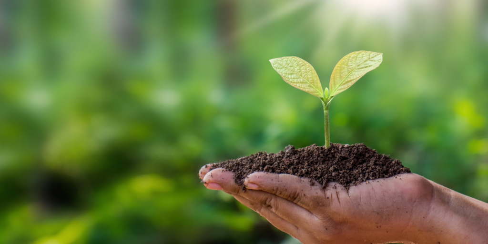
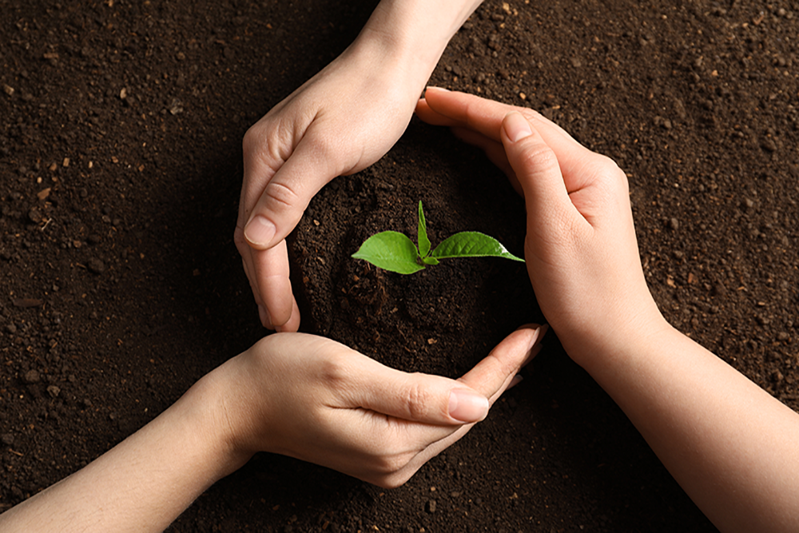
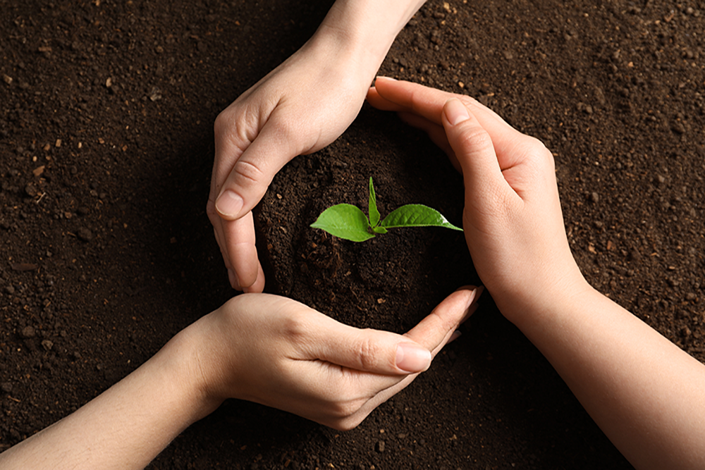
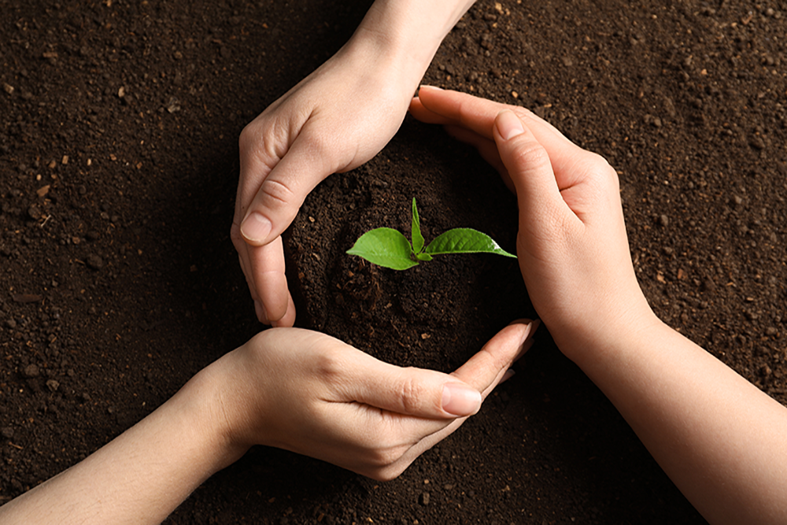

What Is Sustainability
Sustainability is the ability to sustain or continue a process over a long amount of time. Sustainability in both political and business contexts aims to keep natural or physical resources from being destroyed so they can be used for a long time to come.

 

